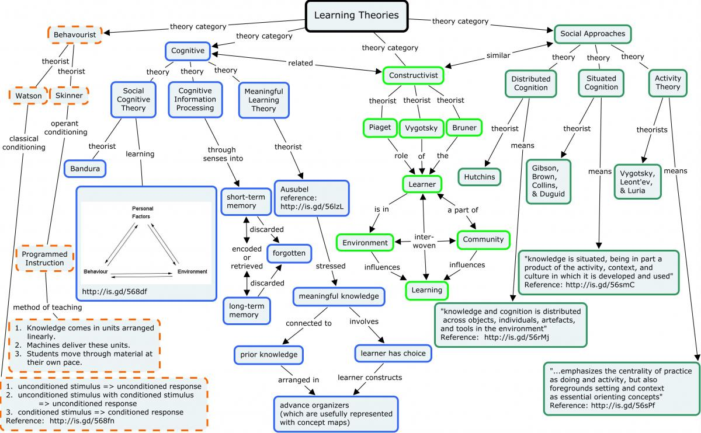

Philosophy of Education
Table of Contents
Note: I haven’t finished writing this file yet.
1. Introduction
The main benefits of a college education are the certification and associated ethos, trending salary increases, job security, structure and thoroughness of education, and the opportunity to find like-minded people.
The main benefits of self-directed education are the freedom, flow-state orientated learning, lack of debt, and ease to simultaneously work.

2. Intelligence
- Intelligence is the abstract collection of the capacity for logic, understanding, self-awareness, learning, emotional knowledge, reasoning, planning, creativity, and problem solving. There are many different types of intelligence and specialized esoterical knowledge.
- Intelligence Quotient (IQ)
- IQ is a numerical measurement for comparing one’s intelligence against other’s. It is predictive of a wide range of life outcomes: academic achievement, income, productivity, acts of crime, etc.
- IQ is largely genetic based, but it isn’t everything though. Even if IQ is predictive, it doesn’t perfectly predict outcomes.
- IQ scores are not objective. Algorithms are not objective and they can have just as many flaws as their creator instills into them, therefore IQ tests can only be accurate to a certain extent, making them no more accurate than someone knowing where they generally stand against the populace.
- The Definition of a Genius
General IQ: Matters more than Nominal IQ because it is the ability for abstract reasoning, how quickly you can acquire skills and knowledge, and how far they can be advanced. Nominal IQ: is the skills and knowledge itself. Reading Books, education, etc can improve Nominal IQ.
The argument that IQ tests are culturally biased only applies to Nominal IQ, whereas General IQ tests cannot possibly be biased, since they don’t depend on prior knowledge, the ability to pattern-match. One doesn’t even have to speak English or be literate at all to answer these tests. The cultural bias argument does not apply to General IQ.
General IQ tests only work if the test-taker had never taken the tests before, lest this will introduce bias that will inflate the test results. For example, Christopher Langan claims that his IQ is 200, but he probably did this by taking the test multiple times beforehand to inflate his IQ test score. Engineer claims that his General IQ is 170. Engineer believes that oil is actually generated by chemical reactions by abiogenesis bacteria below the Earth’s surface, and that the energy comes from deep inside the Earth. The bacteria are the life generating the energy, and Engineer claims that the energy comes from deep inside the Earth.
If Abstract Intelligence IQ tests measure the ability to two abstract reasoning, which is essentially pattern matching, and Pattern solving, it may be asked: How can search test be created that reliably test peoples abilities to match patterns if someone would have in the first place. The answer is easy. For NP problems, it takes vastly more time to find the solution when given the problem to solve, whereas polynomial problems, the solution can be found as quickly as the problem was given.
3. Beginners Should Not Decide For Themselves
We don’t let kids decide for themselves when it comes to playing in the road, visiting the creepy uncle, playing with matches, doing meth, petting the venomous snake, etc.
The best thing to do would be to: 1. Tell them that it (religion) is wrong, 2. Explain to them why it’s wrong, and 3. Make it available for them to access it if they are still curious.
Nobody ever gains anything if something is censored, so it is definitely bad to prevent a child from reading the Bible if they are still curious. They should certainly have access to it if they want to know more by reading the source itself. They will already know my informed opinion on it, and it’s even better if reading it will enable them to arrive at the same conclusion.
You can lead a horse to water, but you can’t make it drink. In this case, you should lead them on the right path, but if they don’t want to follow the path, you can’t really do much about it.
It’s comparable to how people are lectured to not do harmful addictive drugs and many of those people end up doing drugs anyway. They were told not to do the drugs, but if they chose to do them, there’s really not much that can be done from there since you already did what you could.
Another good reason why beginners should not decide for themselves is that all the time wasted, trying to figure out what the most ideal system could be a waste of time thousands of hours I could be doing more productive things. To add to that I have probably wasted thousands of hours reading and thinking about the wrong issues facing society and the modern world before I accepted my current ideology of biological realism, post, moralism, and Georgism.
Question: Do any of the efforts made into teaching young children social, cognitive, and development skills really have effects lasting into adolescence and adulthood that would not have otherwise happened?
Many people should stop wishing that they “took a class on setting boundaries/doing taxes/some practical adult skill”. The education system probably wouldn’t have taught the students the right way to do it, and even if they did, many of the students wouldn’t have listened anyway.
Private School Success Around the World - John Stossel
[[https://www.youtube.com/watch?v=rOGkqglKfJ4][School Choice - John Stossel]
Government-Run Schools Crush Innovation - John Stossel
Certification is only as good as the reputations of the certifiers. People need to evaluate the reputation of the certifiers before assessing the value of the certification. Since colleges have good reputations for certification, they have value.
Regarding education, it makes more sense to group students according to age instead of ability. It is irrational to believe that merely being at a certain age makes a student ready for a particular subject, say trigonometry, Standardized testing does not measure understanding.
Sometime, I should write a file listing the limitations of my brain: I don’t seem to have enough short-term memory to imagine a lot of details in a mathematical picture I don’t seem to have enough short-term memory to perform multiplication of large numbers
4. Reasons Why Homework Is Assigned To Students
The basic objectives of assigning homework to students often align with schooling in general. However, teachers have many purposes for assigning homework, including:
- reinforcing skills taught in class
- extending skills to new situations
- preparing for future class lessons
- engaging students in active learning
- developing time management and study skills
- promoting parent-student communications
- encouraging collaboration between students
- fulfilling school/district policies
- demonstrating a rigorous school program to others
- punishing a student or a class
5. List Of Online Learning Resources
This Wikipedia article shows a List of MOOC providers.
- PhilosophyBasics.com
- Wikiversity
- WikiBooks
- TheBalanceMoney.com
- MusicTheory.net
- Bozeman Science
- HyperPhysics
- OpenCourser.com
- StatTrek.com
- DataScienceCentral.com
- TutorialsPoint.com
- GeeksForGeeks.org
- edX
- Code Academy
- Crash Course
- Latex-Tutorial.com/tutorials
- dev.MySQL.com
- Guru99.com
- PatrickJMT.com
- mbaknol.com
- intmath.com
- TheFourierTransform.com
- Wikipedia.org
- StackExchange.com
5.1. Massive Open Online Course Providers
5.2. Proprietary Learning Resources
5.3. Second Language Learner (SLL) Resources
- Lingo Deer
- Duolingo
- Wikipedia.org (for technical linguistics information)